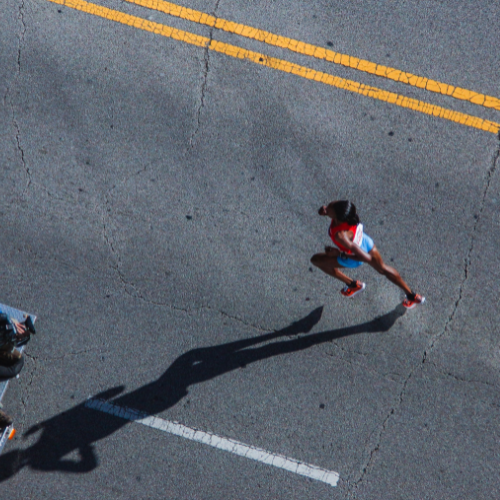
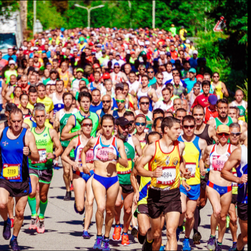
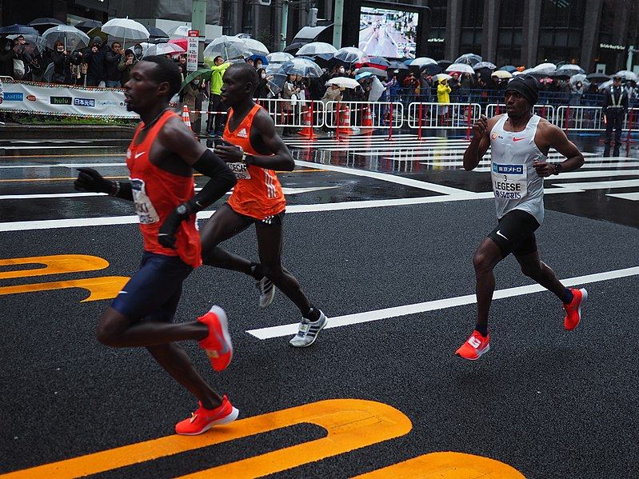

A corrida de rua é uma excelente forma de melhorar a saúde cardiovascular, aumentar a resistência e liberar o estresse do dia a dia. Além de ser uma atividade democrática, pode ser praticada por pessoas de todas as idades.
Por: Daniel Alexandre
Ler mais

Participar de uma maratona é um desafio significativo. Exige preparação física e mental. Planeje seus treinos, siga uma alimentação equilibrada, e tenha paciência para progredir gradualmente. Cada quilômetro é uma conquista rumo à linha de chegada.
Por: Daniel Alexandre
Ler mais

Quer correr mais rápido e por mais tempo? Invista em treinos intervalados, mantenha uma boa postura e cuide da sua hidratação. Pequenos ajustes na técnica podem trazer grandes resultados na performance.
Por: Daniel Alexandre
Ler mais